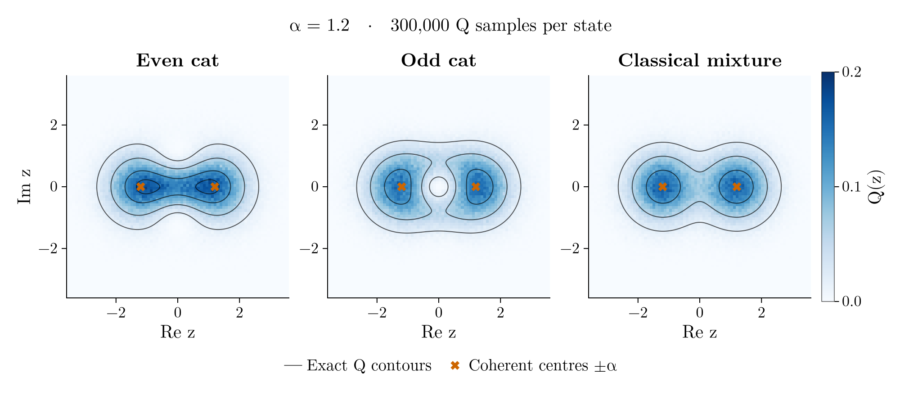
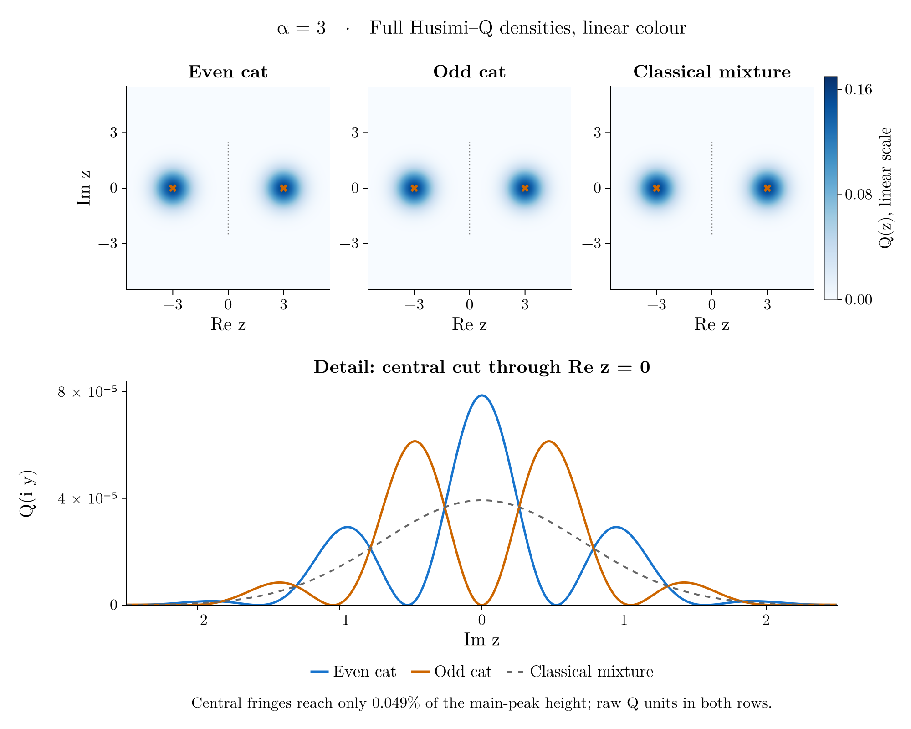
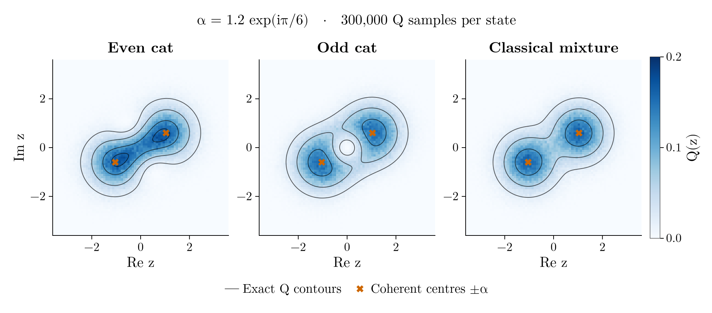

Cat states by rejection sampling
This worked example applies the rejection method introduced in Exact Q Sampling to a coherent superposition. The Gaussian proposal samples a classical mixture; the acceptance step produces the cat's interference. We compare the resulting Q samples, then check their moments and acceptance rates.
A cat state coherently combines two coherent states centred at opposite complex amplitudes, +α and −α. The relative sign distinguishes even and odd cats:
\[|C_\pm\rangle = \frac{|\alpha\rangle\pm|-\alpha\rangle} {\sqrt{2(1\pm e^{-2|\alpha|^2})}}.\]
EvenCat(α) chooses the plus sign; OddCat(α) chooses the minus sign. Both contain the same two coherent components. Their interference gives different Husimi-Q distributions, which this package samples exactly without a Fock cutoff.
Compare even, odd and classical states

Each panel uses 300,000 seeded Q samples at α=1.2. Colour shows a normalised sample histogram; black contours show the independent analytic Q density at 0.02, 0.06, 0.12 and 0.16. Orange crosses mark the coherent-component centres ±α, which need not coincide with the maxima of the full Q distribution. All panels share axes, bins and a colour scale. Download PDF.
The even cat has enhanced density between the components. The odd cat has an exact Q node at the origin. The equal classical mixture has no interference term. A histogram averages over finite bins, so its central bins need not be exactly zero even when the analytic density vanishes at one point.
These axes are complex-amplitude coordinates, Re z and Im z. In the package's quadrature convention z=(x+ip)/√2; the alternative convention uses z=(X+iY)/2, with X=√2x, Y=√2p. See General Gaussian states and quadrature units.
Larger cats: locating weak Q interference
For real α=3, an ordinary Q plot is dominated by two Gaussian-like peaks near z=±3. The interference lies in the much weaker central region around Re z=0, varying along Im z. A plot through either coherent peak is a different cut and will not resemble the central interference profile. The relative fringe contrast falls as sech(2α Re z), giving a characteristic transverse scale 1/(2α), about 0.17 here. This is a thin strip between lobes separated by six amplitude units.

Top: the full Q functions on a shared linear colour scale over −5.5≤Re z, Im z≤5.5. The coherent peaks are near ±3. Dotted segments mark the central line cut shown below. Bottom: that cut in raw Q units, with a separate vertical range reaching only about 8×10⁻⁵. The main peaks above reach about 0.159. Download PDF · Raw line-cut data.
The large-cat Q functions look almost identical on this full linear scale. For the even cat, Q(0)≈7.86×10⁻⁵ is only 0.049% of the main-peak height. The detail panel makes this very small central structure visible; it does not represent the height or dominant shape of the full distribution.
The oscillations can also be located in a logarithmic diagnostic view (PDF). That view uses a colour floor of 10⁻⁹ and divides its central line cut by the explicitly labelled constant Qmix(0)=exp(−9)/π≈3.93×10⁻⁵. This increases the cut's plotted height by about 25,500. It is a magnified diagnostic, so its appearance differs substantially from an ordinary linear Q plot.

For real α, set A=α² and z=iy. The exact central cuts are
\[\begin{aligned} Q_+(iy)&=\frac{2e^{-A-y^2}\cos^2(\alpha y)}{\pi(1+e^{-2A})},\\[4pt] Q_-(iy)&=\frac{2e^{-A-y^2}\sin^2(\alpha y)}{\pi(1-e^{-2A})},\\[4pt] Q_{\mathrm{mix}}(iy)&=\frac{e^{-A-y^2}}{\pi}. \end{aligned}\]
The oscillatory factors have period Δy=π/α. Larger amplitudes pack more fringes into the central region, while the absolute density there falls as exp(−α²). Q remains nonnegative: the interference appears as small positive lobes and nodes. For the Q definition and the significance of its zeros, see Teh et al., Appendix A.
Compare coordinate conventions
These figures use the density with respect to d(Re z) d(Im z). If your plot uses quadrature coordinates, both the positions and the density per coordinate area change:
| Axes | Coordinate relation | Coherent centres for α=3 | Density in those coordinates |
|---|---|---|---|
| u=Re z, v=Im z | z=u+iv | (±3,0) | Q(z) |
| x,p | z=(x+ip)/√2 | (±3√2,0) | Q(z)/2 |
| X,Y | z=(X+iY)/2 | (±6,0) | Q(z)/4 |
The density factors are the Jacobians of these coordinate changes. For a complex α, the two centres rotate with α and the interference cut must rotate with them. With unit direction e=α/abs(α), the corresponding central cut is z=i e y.
The figures use analytic coherent overlaps without a Fock cutoff. Validation compares the central cuts and a two-dimensional grid over the entire displayed square against an independent 80-level Fock calculation. The coherent-state omitted tail in that validation is below 10⁻⁴⁰. These analytic views do not claim that a modest sample histogram resolves the very weak central fringes.
Draw Q samples
Choose the coherent amplitude, state and an explicit RNG:
using QuantumPhaseSpace, Random, Statistics
rng = MersenneTwister(42)
α = 1.2 + 0im
N = 100_000
even = EvenCat(α)
odd = OddCat(α)
mixture = Mixture((Coherent(α), Coherent(-α)), [0.5, 0.5])
z, zbar = husimiQ(rng, even, N)
println(length(z), " samples; conjugate coordinates: ", zbar == conj.(z))100000 samples; conjugate coordinates: trueEach z is one point in the ordinary Q phase plane. The second returned vector is its complex conjugate. sampleQ provides the same distribution in the common modes × samples layout and can report rejection diagnostics:
Zeven, de = sampleQ(rng, even, N; diagnostics=true)
Zodd, do_ = sampleQ(rng, odd, N; diagnostics=true)
Zmix, dm = sampleQ(rng, mixture, N; diagnostics=true)
(even=round(acceptance_rate(de); digits=4),
odd=round(acceptance_rate(do_); digits=4),
mixture=acceptance_rate(dm))(even = 0.5257, odd = 0.4739, mixture = 1.0)vec(Zeven) gives the single-mode sample vector. The matrix layout also applies to multimode states. A complete batch is returned on success; a rejection sampler that exhausts max_attempts raises a SamplingError with its proposal counts.
How the sampler preserves interference
For the amplitude in the figure, both cats use the direct two-Gaussian proposal:
- Choose +α or −α with equal probability.
- Draw
z = ±α + ξ, withξ ~ CN(0,1)andE[abs2(ξ)]=1. - Accept the proposal with the interference-dependent probability
\[p_{\mathrm{acc},\pm}(z)=\frac12\left[ 1\pm\frac{\cos\!\left(2\operatorname{Im}(\alpha^*z)\right)} {\cosh\!\left(2\operatorname{Re}(\alpha^*z)\right)}\right].\]
The Gaussian proposal by itself samples the classical mixture in the third panel. Rejection supplies the coherent interference for the first two panels. The exact mean acceptance of this proposal is
\[\mathcal A_\pm=\frac{1\pm e^{-2|\alpha|^2}}2.\]
At α=1.2 this is approximately 0.5281 for the even cat and 0.4719 for the odd cat. The mixture accepts every direct draw. The observed rates above fluctuate around these targets. The implementation evaluates the hyperbolic factor stably; samples are drawn over the entire complex plane.
For reference, writing A=abs2(α), the plotted analytic densities are
\[\begin{aligned} Q_\pm(z)&=\frac{ e^{-|z-\alpha|^2}+e^{-|z+\alpha|^2} \pm2e^{-|z|^2-A}\cos\!\left(2\operatorname{Im}(\alpha^*z)\right) }{2\pi(1\pm e^{-2A})},\\[6pt] Q_{\mathrm{mix}}(z)&=\frac{e^{-|z-\alpha|^2}+e^{-|z+\alpha|^2}}{2\pi}. \end{aligned}\]
All are nonnegative and normalised on the complex plane. The figure generator checks these densities independently of the sampler's overlap implementation. Its histogram uses the total number of samples for normalisation, including samples outside the displayed square; no distribution is conditioned on the plotting window.
Check the sampled moments
Q moments are antinormally ordered. In particular, mean(abs2, z)-1 estimates the occupation. The correction is one:
\[\mathbb E_Q[|z|^2]=\langle n\rangle+1, \qquad \mathbb E_Q[z^2]=\alpha^2.\]
For the three states:
| State | Occupation ⟨n⟩ | Q density at the origin |
|---|---|---|
| Even cat | A tanh(A) | 2 exp(−A) / [π(1+exp(−2A))] |
| Odd cat | A / tanh(A) | 0 |
| Equal mixture | A | exp(−A) / π |
The second complex moment is the same for all three states; it checks the amplitude and phase convention. Occupation and the central Q density reveal the distinction between these states. For the even-cat samples:
A = abs2(α)
number_samples = abs2.(z) .- 1
estimate = mean(number_samples)
standard_error = std(number_samples) / sqrt(N)
target = A * tanh(A)
@assert abs(estimate-target) < 6standard_error
(estimated_occupation=round(estimate; digits=4),
exact_occupation=round(target; digits=4),
standard_error=round(standard_error; digits=4))(estimated_occupation = 1.2885, exact_occupation = 1.2869, standard_error = 0.0063)The figure validation also checks both parts of the complex first and second moments, density normalisation, the probability in the central interference region, and acceptance at six standard errors. The measurements for all six panels are available as tab-separated validation data.
Complex amplitudes and relative phases
A complex α rotates the line joining the component centres. Here the amplitude has the same magnitude as before and a phase of π/6:
αrot = 1.2cis(π/6)
rotated_even = EvenCat(αrot)
zrot, _ = husimiQ(rng, rotated_even, N)
The same comparison with α=1.2 exp(iπ/6), independent seeded samples, and the same density scale and coordinate limits. The component centres rotate with α. Download PDF.
The relative phase is a separate choice: Cat(α, φ) represents |α⟩ + exp(iφ)|−α⟩, with the appropriate normalisation. It changes the interference between the fixed components:
phase_cat = Cat(αrot, π/2)
Zphase = sampleQ(rng, phase_cat, N)Include preparation loss
Loss(cat, η) applies the pure-loss channel, including decoherence. For Q,
\[z_{\mathrm{out}}=\sqrt\eta\,z_{\mathrm{in}}+\sqrt{1-\eta}\,\xi, \qquad \xi\sim\mathrm{CN}(0,1).\]
The environment noise is part of the channel. Simply reducing α in a pure-cat constructor would retain pure-state coherence instead. Occupation scales by η:
η = 0.65
Zloss = sampleQ(rng, Loss(even, η), N)
loss_numbers = abs2.(vec(Zloss)) .- 1
loss_estimate = mean(loss_numbers)
loss_error = std(loss_numbers) / sqrt(N)
loss_target = η * A * tanh(A)
@assert abs(loss_estimate-loss_target) < 6loss_error
(estimated_occupation=round(loss_estimate; digits=4),
exact_occupation=round(loss_target; digits=4))(estimated_occupation = 0.837, exact_occupation = 0.8365)Small odd cats
As α approaches zero, the odd cat approaches the one-photon state. Its direct Gaussian proposal becomes inefficient, so the implementation selects a different exact proposal when it has better expected acceptance. That acceptance tends to one. A small finite cat retains its exact finite amplitude:
small_odd = OddCat(0.05)
Zsmall, ds = sampleQ(rng, small_odd, N; diagnostics=true)
round(acceptance_rate(ds); digits=4)0.9984OddCat(0) is undefined; explicitly choose Fock(1) for the limiting state. General relative phases close to destructive cancellation can also have low acceptance. The small-odd-cat derivation explains the alternate proposal and its bound.
Continue with other exact Q families
| Example | Constructor | What it demonstrates |
|---|---|---|
| Photon-added thermal state | PhotonAddedThermal(2, 0.7) | Exact radial Gamma sampling |
| Photon-added coherent state | PhotonAddedCoherent(1, 0.8+0.3im) | A finite exact displaced Fock expansion |
| NOON state | NOON(2; phase=π/3) | Phase-sensitive two-mode coherence |
| Fixed-number condensate | FixedNumberCondensate(20, [sqrt(0.3), sqrt(0.7)*cis(0.4)]) | A collective Fock mode with orthogonal vacuum modes |
See the support table, state constructors, and exact sampling derivations. The executable examples/exact_sampling.jl covers all of these families. Every supported Q state also has positive-P initial sampling; estimator variance and subsequent dynamical stability are separate questions from the exactness of Q generation.
Regenerate the figures
From the repository root, in an existing Julia session:
using Pkg
Pkg.activate("examples")
Pkg.develop(path=".")
Pkg.instantiate()
include("examples/cat_q.jl")
CatQShowcase.make_cat_q_figures()The script writes PNG/PDF sampled comparisons, the analytic large-cat fringe view, and their validation tables under docs/src/assets. It uses CairoMakie, 300,000 samples per state, and explicit MersenneTwister seeds 4242 and 4243. The plotting range affects only the displayed histogram; the samplers themselves have no spatial window.